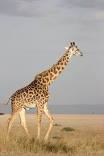

About 12,860,000,000 results (0.61 seconds) This search may be relevant to recent activity: sports images Search History Feedback Results for Kileleshwa, Nairobi ∙ Choose area Top stories FOX Sports English Premier League News, Scores, & Standings 6 Aug 2016 Sky Sports Motherwell 2-1 St Mirren: Kevin van Veen and Max Johnston lift hosts up the Scottish Premiership table 13 hours ago Sports Mole Preview: Sheriff Tiraspol vs. Partizan - prediction, team news, lineups 2 hours ago The Star CS Namwamba unveils sports development committees 22 hours ago More news
chelseafc